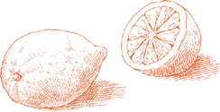

Салатный курс  Буквальное значение итальянского слова для салата—un’insalata—это «то, к чему добавлена соль», но это слово также имеет популярное метафорическое использование, применяемое пренебрежительно, когда описывается, например, интерьер или набор мыслей, которые выглядят довольно запутанными. Затем есть L’insalata, который конкретно относится к салатному курсу, курсу с четко определенной ролью в классической последовательности итальянского обеда. L’insalata подается неизменно после второго блюда, чтобы сигнализировать о приближающемся конце трапезы. Он освобождает вкус от захвата кулинарных изысков, ведя его к прохладным, свежим ощущениям, к переосмыслению пищи в ее наименее обработанном состоянии.
Буквальное значение итальянского слова для салата—un’insalata—это «то, к чему добавлена соль», но это слово также имеет популярное метафорическое использование, применяемое пренебрежительно, когда описывается, например, интерьер или набор мыслей, которые выглядят довольно запутанными. Затем есть L’insalata, который конкретно относится к салатному курсу, курсу с четко определенной ролью в классической последовательности итальянского обеда. L’insalata подается неизменно после второго блюда, чтобы сигнализировать о приближающемся конце трапезы. Он освобождает вкус от захвата кулинарных изысков, ведя его к прохладным, свежим ощущениям, к переосмыслению пищи в ее наименее обработанном состоянии.
Основные и обычно единственные компоненты салатного курса — это овощи и зелень, сырые или вареные, по отдельности или в сочетании. Выбор меняется в зависимости от сезона: сырое finocchio или нашинкованная савойская капуста или вареная брокколи осенью и зимой; весной — вареная спаржа и зеленая фасоль, затем кабачки или молодая картошка; в разгар лета преобладают сырые ингредиенты, с помидорами, перцами, огурцами, салатами и разнообразием мелкой зелени. Расширенная доступность многих овощей в течение большей части года, конечно, размывает некоторые сезонные различия, но мы все равно хотим, чтобы салатный курс говорил нам о сезоне, который произвел его компоненты.
Существует, безусловно, множество других видов салатов, таких как салаты с рисом и курицей, рисом и морепродуктами, тунцом и фасолью, или любое количество блюд, содержащих холодные мясные продукты, рыбу или курицу, смешанную с бобовыми или сырыми или вареными овощами. Такие салаты могут подаваться в качестве закуски, в качестве первого блюда вместо пасты или risotto, в качестве основного блюда легкого обеда или как часть шведского стола. На самом деле, их можно подавать как угодно, кроме как в качестве L’insalata, салатного курса.
Заправка салатного курса Итальянская заправка — это оливковое масло первого холодного отжима, соль и винный уксус.
Множество вариаций одной и той же пословицы дает нам формулу для идеально приправленного салата. Одна версия говорит, что для хорошего салата нужно четыре человека: один разумный для соли, один расточительный для оливкового масла, один скупой для уксуса и один терпеливый, чтобы перемешать. Оливковое масло — это доминирующий ингредиент, и правильно приготовленный салат не должен быть с ним скромным. Итальянцы никогда не скажут, когда наслаждаются хорошо перемешанным салатом: «Какой замечательный соус!» Они скажут: «Какое чудесное масло!»
Когда промытые сырые зелени попадают в салат, их сначала необходимо тщательно высушить, потому что вода, которая на них остается, разбавляет заправку. Салатницы делают эту работу, или вы можете завернуть зелень в большое полотенце, собрать все четыре угла полотенца в одной руке и несколько раз резко встряхнуть полотенце над раковиной.
Салатный курс заправляется на столе, когда готов к подаче; это никогда не делается заранее. Салат для всего стола должен быть в одной большой миске, с достаточным пространством для всех овощей, чтобы они могли полностью перемешаться при перемешивании. Компоненты заправки никогда не смешиваются заранее, они наливаются отдельно на салат.
Сначала добавьте соль и имейте в виду, что разумность не означает очень мало соли, это означает ни слишком много ни слишком мало. Сделайте один быстрый оборот салата, чтобы распределить соль и начать ее растворять, затем щедро налейте масло. По наблюдениям, я заметила, что люди за пределами Италии никогда не используют достаточное количество масла. Его должно быть достаточно, чтобы создать блеск на поверхности овощей. Добавьте уксус в последнюю очередь, всего несколько капель, необходимых для придания аромата, и никогда не более одной скромной части уксуса на три полные части масла. Немного уксуса достаточно, чтобы его заметили, немного слишком много отвлекает все ваше внимание в ущерб каждому другому ингредиенту. Также имейте в виду, что кислота уксуса, как и лимона, «готовит» салат, что объясняет, почему масло наливается первым, чтобы защитить зелень. Как только вы добавите уксус, начните перемешивать. Чем тщательнее перемешан салат и чем равномернее соль, масло и уксус распределены по каждому листу и каждому овощу, тем лучше он будет на вкус. Перемешивайте осторожно, аккуратно переворачивая зелень, чтобы избежать повреждения и потемнения.
Другие приправы Свежевыжатый лимонный сок является приятной заменой уксуса. Он отлично подходит для вареных салатов, таких как вареная швейцарская мангольд, которые затем описываются как all’agro, в кислой манере. Лимон также приветствуется на очень мелко натертой моркови или летом на помидорах и огурцах.
Чеснок может быть захватывающим, когда вы используете его время от времени, по импульсу, но на регулярной основе он утомляет. Его присутствие должно быть незаметным, как в Салате из нашинкованной савойской капусты или в помидорах в этом рецепте.
Перец не распространен. Вероятно, изначально это была слишком дорогая специя, чтобы стать частью скромного, повседневного блюда, как салат. Но если вам это нравится, для него определенно есть место в итальянских салатах, если это черный перец, потому что он имеет более полный аромат, чем белый.
Бальзамический уксус, как бы незнаком он ни был до недавнего времени другим итальянцам, использовался в Модене на протяжении веков для улучшения вкуса основной заправки для салата. Но моденцы никогда не использовали его каждый день, и я тоже не стала бы. Его сладость и густой аромат — это качества, которые можно использовать время от времени, чтобы удивить вкусовые рецепторы, но если использовать их слишком часто, они становятся приторными. При заправке салата бальзамический уксус используется для обогащения обычного винного уксуса, а не для замены его.
Как базилик, так и петрушка пойдут на пользу большинству салатов. Использование мяты, как и орегано и других трав, более ограничено, как это иллюстрируют рецепты в этой главе.
Нарезанный лук усиливает вкус большинства сырых салатов, особенно тех, что с помидорами. Чтобы смягчить его резкий вкус, лук должен пройти следующую процедуру, начиная за 30 минут или более до подготовки других ингредиентов салата:
• Очистите лук, нарежьте его очень тонкими кольцами, положите в миску и обильно залейте холодной водой.
• Сожмите кольца в руке на 2 или 3 секунды, крепко сжимая руку и отпуская 7 или 8 раз. Кислота, которую вы выжимаете из лука, сделает воду слегка молочной.
• Извлеките кольца лука с помощью дуршлага или сита, слейте воду из миски, налейте свежую воду. Положите лук обратно в миску и повторите вышеуказанную процедуру еще 2 или 3 раза.
• После последнего выжимания лука снова смените воду и оставьте лук на замачивание. Сливайте и заменяйте свежей водой каждые 10 минут, пока не будете готовы приготовить салат.
• Перед тем как положить лук в салатницу, соберите его плотно в полотенце и выжмите всю влагу, которую сможете.

На 8 порций
½ среднего лука, предпочтительно сладкого сорта, такого как бермудский красный, Видалия или Мауи, нарезанного и замоченного как описано, ИЛИ 3 или 4 зеленых лука
2 маленькие моркови
1 короткий, круглый финоккьо
½ желтого или красного сладкого перца
1 сердцевина сельдерея
½ головки курчавого цикория, Бостонского салата или эскаролы, ИЛИ 1 целая головка салата Бибб
½ небольшого пучка маша или полевого салата
½ небольшого пучка рукколы
1 средний артишок ½ лимона
2 свежих, спелых, твердых, средних круглых помидора
Соль
Оливковое масло первого холодного отжима
Выбор качественного красного винного уксуса
Примечание Смешанный салат в итальянском стиле должен включать как можно больше разнообразных текстур и вкусов, которые может предложить рынок, и предложенные выше ингредиенты используют круглогодичную доступность многих овощей. Выбор следует рассматривать как тщательно продуманную рекомендацию, но он не является строгим, и вы можете работать в рамках этих рекомендаций, чтобы сделать замены, которые подходят вашему вкусу и адаптированы к возможностям, предлагаемым вашим рынком и сезоном.
В таком смешанном салате вы также можете использовать савойскую, краснокочанную или зеленую капусту, очень мелко нарезанную; радиккьо; ромен или любой другой сорт салата, кроме айсберга, который не имеет итальянского вкуса; маленькие красные или белые редиски, нарезанные тонкими дисками; огурец вместо моркови, но не оба вместе; очень молодые кабачки, замоченные, очищенные и обрезанные как описано, нарезанные тонкими соломками и добавленные в салат сырыми.
1. Подготовьте лук, как предложено, или, если вы используете зеленый лук, отрежьте тонкий срез от основания, обрезав корни, и еще один срез от верхушки, удалите и выбросьте любые поврежденные или обесцвеченные листья, затем нарежьте весь зеленый лук тонкими кольцами. Замочите его в холодной воде на несколько минут, затем слейте и обсушите в полотенце. Положите лук, когда он будет готов, или зеленый лук, в большую сервировочную миску.
2. Вымойте морковь, отрежьте тонкий срез от верхушек и концов, очистите их, затем натрите на самой крупной терке или в кухонном комбайне, или нарежьте их как можно тоньше. Добавьте их в миску.
3. Отрежьте верхушки финоккио, где они соединяются с луковицей, и выбросьте их. Отделите и выбросьте любые внешние части луковицы, которые могут быть повреждены или обесцвечены. Срежьте около ⅛ дюйма от конца. Нарежьте луковицу горизонтально, поперек, на очень тонкие кольца. Замочите кольца в 2 или 3 сменах холодной воды, затем обсушите в полотенце или в салатнице. Добавьте финоккио в миску.
4. Соскоблите и выбросьте внутреннюю мякоть и все семена перца. Очистите его сырым, используя очищающий нож с поворотным лезвием, затем нарежьте вдоль на очень тонкие полоски и добавьте их в миску.
5. Удалите любые листовые верхушки из сердцевины сельдерея, отрежьте тонкий срез от основания, нарежьте сердцевину поперек на узкие кольца шириной около ¼ дюйма и положите их в миску.
6. Если вы используете курчавую цикорию, бостонский салат или эскаролу, выбросьте все внешние, темно-зеленые листья. Отделите оставшиеся листья от кочана и порвите их руками на небольшие кусочки. Замочите их в одной или двух сменах холодной воды на 15–20 минут, пока в воде не останется следов земли. Слейте воду и либо обсушите, либо встряхните в полотенце. Если вы используете салат Бибб, подготовьте его, как описано выше, но будьте особенно осторожны при обращении с ним, так как он легко повреждается и темнеет. Добавьте в миску.
7. Оторвите стебли маша или полевого салата и рукколы, порвите большие листья на две или более частей, замочите, слейте и высушите их, как вы делали с салатом. Положите их в миску.
8. Отделите и выбросьте стебель артишока, обрежьте все жесткие части как описано, срезая немного больше с верхушки листьев, чем вы бы сделали при его приготовлении. Разрежьте артишок пополам, чтобы открыть сердцевину и колючие внутренние листья, которые вы будете соскребать и выбрасывать. Нарежьте артишок вдоль на самые тонкие ломтики, которые сможете. Выжмите несколько капель сока из половинки лимона на все нарезанные части, чтобы они не потемнели, и добавьте их к другим ингредиентам в миске.
9. Очистите сырые помидоры, используя нож для очистки с вращающимся лезвием, нарежьте их дольками, удалите некоторые семена и положите помидоры в салатницу.
10. Обильно, но с умом посыпьте солью, один раз перемешайте, влейте достаточно оливкового масла, чтобы покрыть все овощи, добавьте щепотку уксуса и тщательно перемешайте, но не грубо. Подавайте сразу.

КОГДА я ПРОВОДИЛА серию уроков в Бриджхэмптоне, Лонг-Айленд, одно лето, я разработала учебный план по соусам для пасты, ризотто и рыбным блюдам, которые, как я надеялась, будут интересны моим студентам и станут подходящими блюдами для необыкновенных продуктов ферм и вод Лонг-Айленда. В один из дней, как после мысли, я включила в меню этот томатный салат, приготовленный так, как его готовил мой отец, когда я была маленькой девочкой. Ответ на пасту и рыбу был таким же восторженным, как я и надеялась, но именно салат стал звездой шоу. Когда весь томатный салат был съеден, студенты боролись за право владения сервировочным блюдом, чтобы макать в соки хлебом. Кажется, трудно когда-либо сделать достаточно этого томатного салата, поэтому вам тоже может показаться целесообразным, когда вы его подаете, щедро сопровождать его ломтиками хорошего, хрустящего хлеба.
На 4–6 порций
4–5 зубчиков чеснока
Соль
Уксус хорошего качества из красного вина
2 фунта (900 г) свежих, спелых, твердых, круглых или сливовидных помидоров
1 дюжина свежих листьев базилика
Оливковое масло первого холодного отжима
1. Очистите зубчики чеснока и сильно разомните их тыльной стороной ножа. Положите их в небольшую миску или соусник вместе с *от* 1 *до* 2 чайными ложками соли и *2 столовыми ложками* уксуса. Перемешайте и дайте настояться как минимум 20 минут.
2. Сырую кожуру помидоров снимите с помощью ножа с поворотным лезвием, нарежьте их тонкими ломтиками и разложите ломтики на глубоком сервировочном блюде.

3. Когда будете готовы подавать салат, промойте листья базилика в холодной воде, стряхните с них влагу, порвите их руками на 2 или 3 части и посыпьте ими помидоры.
4. Процедите уксус с чесноком через мелкое сито, распределяя его по помидорам. Добавьте достаточно оливкового масла, чтобы хорошо покрыть помидоры, перемешайте, попробуйте и при необходимости добавьте соль и уксус, и подавайте немедленно.
ТЕРТАЯ МОРКОВЬ с лимонным соком — один из самых освежающих салатов и, возможно, самый простой в приготовлении.
На 4 порции
5 *до* 6 средних морковок, вымытых, обрезанных, очищенных и натертых, как описано в рецепте для Великого смешанного сырого салата
Соль
Оливковое масло первого холодного отжима
1 столовая ложка свежевыжатого лимонного сока
Смешайте все ингредиенты, добавив достаточно оливкового масла, чтобы хорошо покрыть морковь. Тщательно перемешайте, попробуйте и при необходимости добавьте соль и лимонный сок, и подавайте немедленно.
К ингредиентам предыдущего рецепта добавьте ½ фунта свежей рукколы и замените лимонный сок на красный винный уксус. Подготовьте, замочите, слейте и высушите рукколу так, как описано в рецепте для Великого смешанного салата из сырых овощей. Смешайте все ингредиенты, как описано выше.
На 4 порции, если фенхель большой
Примечание Уксус или лимонный сок не используются в сыром фенхеле, когда он подается отдельно.
1. Подготовьте фенхель, нарежьте его очень тонкими ломтиками, замочите и высушите, как описано в рецепте для Великого смешанного салата из сырых овощей.
2. Перемешайте в салатнице с солью, добавьте достаточно оливкового масла, чтобы хорошо покрыть, и обильно поперчите черным перцем.
На 4 порции
1. Замочите топинамы на 15 минут в холодной воде, затем тщательно очистите их под проточной водой с помощью грубой ткани или щетки. Нарежьте их на бумажно-тонкие ломтики и положите в сервировочную миску.

2. Шпинат будет гораздо приятнее есть, если вы отделите самую нежную часть каждого листа от стебля и его жесткой ребристой части. Одной рукой сложите лист вдоль, загибая его внутрь к верхней стороне, а другой рукой оторвите стебель вместе с тонкой ребристой частью, выступающей с нижней стороны листа. Замочите обрезанный шпинат в тазу с достаточным количеством холодной воды, чтобы он был полностью покрыт. Слейте воду и снова наполните свежей водой так часто, как это необходимо, пока не останется никаких следов земли. Высушите в центрифуге или встряхните листья, чтобы удалить всю возможную влагу, разорвите их на два или три меньших кусочка и добавьте в миску.
3. Тщательно перемешайте с солью, перцем, достаточным количеством масла, чтобы хорошо покрыть, и всего лишь каплей уксуса. Подавайте немедленно.
Вы ЗДЕСЬ НАЙДЕТЕ еще один пример того, как в итальянских салатах используется только аромат чеснока. Также смотрите этот томатный салат.
На 6 или более порций
1 савойская капуста, около 900 г
Кусок корки хлеба
2 зубчика чеснока
Соль
Черный перец, свежемолотый
Оливковое масло первого холодного отжима
Уксус из красного вина высокого качества
1. Снимите зеленые внешние листья с капусты и выбросьте или сохраните для овощного супа. Нашинкуйте все белые листья очень мелко и положите их в сервировочную миску.
2. Удалите мягкую мякоть из хлеба, а из корки нарежьте два куска длиной около 2.5 см.
3. Легко разомните зубчики чеснока ручкой ножа, разрывая шкурку и удаляя ее. Энергично потрите чесноком обе части корки хлеба, положите корки в миску и выбросьте чеснок. Хорошо перемешайте и оставьте на 45 минут до 1 часа.
4. Когда будете готовы к подаче, добавьте соль, перец, достаточно оливкового масла, чтобы хорошо покрыть, и щепотку уксуса в миску. Повторно перемешайте капусту, пока она равномерно не покроется заправкой. Уберите и выбросьте корки хлеба. Попробуйте и при необходимости добавьте приправы, и подавайте сразу.

На 6-8 порций
1 головка салата романо
5 столовых ложек оливкового масла первого холодного отжима
1 столовая ложка уксуса из красного вина
Соль
Черный перец, свежемолотый
¼ фунта (около 110 г) импортного горгонзола, доведенного до комнатной температуры за 3-4 часа до использования
½ чашки очищенных грецких орехов, крупно нарезанных
1. Сорвите и выбросьте любые повреждённые внешние листья ромен-латука. Отделите остальные от кочана и порвите их руками на кусочки размером с укус. Замочите в нескольких сменах холодной воды, затем отожмите или обсушите в полотенце.
2. Положите оливковое масло, уксус, щепотку соли и несколько оборотов перца в салатницу. Взбейте их вилкой до равномерного смешивания приправ.
3. Добавьте половину горгонзолы и тщательно разомните её вилкой. Добавьте половину нарезанных грецких орехов, весь латук и тщательно перемешайте, чтобы заправка равномерно распределилась. Попробуйте и при необходимости скорректируйте приправу.
4. Посыпьте оставшейся горгонзолой, разломав её по салату, и оставшимися нарезанными грецкими орехами. Подавайте сразу.
На 6 порций
1 огурец
3 апельсина
6 маленьких красных редисок
Свежие листья мяты
Соль
Оливковое масло первого холодного отжима
Свежевыжатый сок ½ лимона
1. Если огурец восковый или с толстой кожурой, очистите его. Если нет, промойте его под холодной проточной водой. Нарежьте огурец очень тонкими кружочками и выложите их на сервировочное блюдо.
2. Очистите апельсины, удалив всю белую пленку под кожурой. Нарежьте апельсины тонкими кругами, выберите семена и добавьте ломтики на блюдо.
3. Отрежьте и выбросьте листовые верхушки редисок, промойте редиски в холодной воде, не очищая их, нарежьте их тонкими кружочками и добавьте на блюдо.
4. Промойте полдюжины маленьких листьев мяты, порвите их на 2 или 3 части и посыпьте ими ломтики апельсина, редиски и огурца.
5. Добавьте соль, оливковое масло и лимонный сок, тщательно перемешайте, чтобы все хорошо покрыть, и подавайте сразу.

СЛОВО пинцимонио — это сокращение, шутливое по происхождению, но давно прочно укоренившееся в уважительном употреблении, от пинцаре, щипать, и матримонио, брак. Оно описывает обычай держать сырой овощ между большим и указательным пальцем — «щипая» его — и «женить» его с соусом из оливкового масла, соли и перца.
В ресторанах пинцимонио иногда подают к столу, когда вы садитесь, даже до того, как вы посмотрите меню, но его наиболее подходящее и освежающее применение — после мясного или рыбного блюда в substantial и насыщенном обеде.
Обычный набор сырых овощей для пинцимонио включает все или большинство из следующих: морковь, сладкий перец, финоккио, артишоки, сельдерей, огурцы, редис и зеленый лук. Вот как их подготовить:
1. Вымойте и очистите морковь. Если она маленькая и у нее свежие, зеленые верхушки, оставьте их, чтобы держаться за них. Если у вас крупная морковь, отрежьте верхушку и разрежьте морковь вдоль пополам.
2. Разрежьте перцы пополам, чтобы открыть и удалить мякоть с семенами. Нарежьте перцы вдоль на полоски шириной около 1½ дюйма (3.8 см).
3. Удалите зеленые верхушки финоккио, отрежьте тонкий срез с конца, выбросьте любые поврежденные внешние листья, нарежьте финоккио вдоль на 4 дольки и промойте их в нескольких сменах холодной воды.
4. Отделите и выбросьте стебли артишоков. Удалите все жесткие части как описано. Нарежьте артишок вдоль на 4 дольки, удалите волоски и колючие, завитые внутренние листья, и выжмите несколько капель лимонного сока на все нарезанные части, чтобы они не потемнели.
5. Разделите сельдерей на стебли, оставляя сердцевину целой, но разрезая ее вдоль пополам. Срежьте тонкий слой вокруг конца сердцевины. Оставьте зеленые верхушки на сердцевине, но выбросьте все остальные. Промойте в нескольких сменах холодной воды.
6. Вымойте огурцы и разрежьте их вдоль пополам или на 4 части, если они очень толстые.
7. Вымойте редис и не делайте с ним ничего другого, оставив их зеленые верхушки для красоты и чтобы держаться за них.
8. Выберите зеленый лук с толстыми, круглыми луковицами, удалите и выбросьте внешние листья, и отрежьте корни и около ½ дюйма (1.3 см) от верхушек. Промойте в холодной воде.
9. Поместите все овощи в миску или кувшин, где они будут плотно помещаться.
Для каждого гостя следует подготовить блюдце с оливковым маслом, солью и щедрым количеством черного перца. Гости сами выбирают овощи из миски и окунают их в блюдце, таким образом получая пинцимонио.
На протяжении Центральной Италии, от Флоренции до Рима, самый удовлетворяющий салат основан на старом запасе изобретательных бедняков — хлебе и воде. Черствый хлеб увлажняется, но не пропитывается, холодной водой, добавляются другие ингредиенты салата, которые вы найдете ниже, и все перемешивается с оливковым маслом и уксусом. Хлеб, пропитанный приправами и соками салата, растворяется до зернистой консистенции, похожей на рыхлую, грубую поленту. При наличии правильного хлеба — не белого хлеба из супермаркета, а крепкого, деревенского хлеба, такого как в Тоскане или Абруццо — нет изменений, которые можно внести в традиционную версию, чтобы улучшить ее. Если у вас есть источник такого хлеба, или если вы сделали хлеб с оливковым маслом и остались остатки, сделайте салат с ним, как я только что описала. Если вы должны полагаться на стандартный, коммерческий хлеб, альтернативное решение, предложенное в следующем рецепте, даст очень приятные результаты.
На 4-6 порций
½ зубчика чеснока, очищенного
2 или 3 филе анчоусов (предпочтительно приготовленные дома как описано), мелко нарезанные
1 столовая ложка каперсов, замоченных и промытых как описано, если они в соли, слить, если в уксусе
¼ желтого сладкого перца
Соль
¼ чашки оливкового масла первого холодного отжима
1 столовая ложка качественного красного винного уксуса
2 чашки хорошего хлеба, очищенного от корки, поджаренного под грилем и нарезанного на кубики ½ дюйма (сохраните крошки)
3 свежих, спелых, крепких, круглых помидора
1 чашка огурца, очищенного и нарезанного кубиками ¼ дюйма
½ средней луковицы, предпочтительно сладкого сорта, такого как бермудский красный, Видалия или Мауи, нарезанной и замоченной как описано
Черный перец, свежемолотый
1. Разомните чеснок, анчоусы и каперсы в пасту, используя обратную сторону ложки против стенки миски, или ступку с пестиком, или кухонный комбайн.
2. Удалите мякоть сладкого перца вместе с семенами и нарежьте перец кубиками размером ¼ дюйма (0.6 см). Положите перец и смесь чеснока с анчоусами в сервировочную миску, добавьте соль, оливковое масло первого холодного отжима и уксус, и тщательно перемешайте.
3. Положите кубики хлеба вместе с крошками от обрезков в небольшую миску. Протерите 1 из томатов через овощерезку на хлеб. Перемешайте и дайте настояться с небольшим количеством соли в течение 15 минут или более.
4. Очистите остальные 2 томата, используя очиститель с поворотным лезвием, и нарежьте их кубиками размером ½ дюйма (1.3 см), удаляя некоторые семена, если их слишком много. Добавьте замоченные кубики хлеба и нарезанные томаты в сервировочную миску, вместе с нарезанным огурцом, замоченными и отцеженными ломтиками лука и несколькими щепотками черного перца. Тщательно перемешайте, попробуйте и при необходимости добавьте соль, и подавайте.
Все ингредиенты этого салата, кроме фасоли, должны быть нарезаны так мелко, чтобы они стали кремообразными, смешиваясь друг с другом и прилипая к фасоли с консистенцией соуса. Это можно сделать вручную, но если у вас есть кухонный комбайн, он должен быть инструментом выбора.
Компоненты салата развивают лучший вкус, если их перемешивают, пока фасоль все еще довольно теплая. Если вы можете это организовать, постарайтесь так спланировать приготовление фасоли, чтобы она была готова, когда вы собираетесь делать салат.
На 6 порций
2 столовые ложки нарезанного лука
3 свежих листа шалфея
2–3 плоских филе анчоуса (желательно приготовленные дома как описано)
⅓ чашки оливкового масла первого холодного отжима
1 столовая ложка уксуса из красного вина
Желтки 2 вареных вкрутую яиц
1 столовая ложка нарезанной петрушки
Соль
1 чашка сушеных белых фасолей каннелллини, замоченных и приготовленных как указано, и отцеженных (см. примечание)
Черный перец, свежемолотый
Примечание Если вы готовите бобы заранее, храните их в жидкости и разогрейте перед использованием.
1. Положите все ингредиенты, кроме бобов и черного перца, в кухонный комбайн и измельчите до кремообразной консистенции.
2. Смешайте отцеженные бобы, желательно когда они еще теплые, с обработанными ингредиентами. Добавьте черный перец, снова перемешайте и попробуйте, при необходимости добавьте соль и другие приправы. Дайте настояться при комнатной температуре в течение 1 часа, затем снова перемешайте перед подачей. Не refrigerate.
ИДЕАЛЬНЫЕ КОМПОНЕНТЫ этого салата — длинный Тревизо радикио (см. Радикио) и свежие клюквенные бобы (описаны здесь), но есть удовлетворительные заменители для одного или обоих. Вместо Тревизо радикио вы можете использовать более распространенный круглый, или даже бельгийский эндивий, который является частью той же семьи. Вместо свежих бобов вы можете использовать сушеные, и если вы не можете найти ни свежие, ни сушеные клюквенные бобы, вы можете обратиться к сушеным каннеллони бобам.
На 4–6 порций
Клюквенные бобы, 2 фунта свежих, ИЛИ 1 чашка сушеных, замоченных и приготовленных как описано
1 фунт радикио, либо длиннолистный сорт Тревизо, либо круглая головка ИЛИ бельгийский эндивий
Соль
Оливковое масло первого холодного отжима
Качественный винный уксус из красного вина
Черный перец, свежемолотый
1. Если используете свежие бобы: Очистите их, положите в кастрюлю с достаточным количеством холодной, несоленой воды, чтобы она покрывала бобы примерно на 5 см, доведите воду до легкого кипения, накройте кастрюлю и готовьте на медленном, постоянном огне до мягкости, примерно 45 минут до 1 часа. Рассчитайте время приготовления так, чтобы они оставались теплыми при сборке салата.
Если используете сушеные бобы: Следуйте инструкциям по времени приготовления, чтобы они оставались теплыми, когда вы будете собирать салат.
2. Если используете радиккьо: Отделите листья от кочана, выбросив поврежденные, нарежьте их на узкие полоски шириной около 0.6 см, замочите в холодной воде на несколько минут, слейте и либо высушите в центрифуге, либо обсушите в полотенце.
Если используете эндивий: Выбросьте поврежденные листья, срежьте тонкий кусочек с корня, затем нарежьте его поперек на полоски шириной 0.6 см, промойте и высушите, как описано выше.
3. Слейте бобы и положите их, пока они еще теплые, в сервировочную миску с радиккьо или эндивием. Добавьте соль, один раз перемешайте, влейте достаточно масла, чтобы хорошо покрыть, добавьте немного уксуса, обильно поперчите, тщательно перемешайте и подавайте сразу.
КОГДА СПАРЖА находится в сезоне, самый популярный способ ее подачи в Италии — вареная, как салат. Ее подают, пока она еще теплая или не холоднее комнатной температуры. В заправку добавляют немного больше уксуса, чем обычно. Чтобы сохранить спаржу свежей, смотрите рекомендации.
На 4-6 порций
2 фунта (900 г) свежей спаржи, очищенной и приготовленной как описано
Соль
Черный перец, свежемолотый
Оливковое масло первого холодного отжима
Уксус из красного вина высшего качества
1. Cook the asparagus until tender, but still firm, drain, and lay it on a long platter, leaving one end of the platter free. Prop up the opposite end, to allow the liquid shed by the asparagus to run down toward the free end of the platter. After 15 to 20 minutes, pour out the liquid that has collected, and rearrange the asparagus, spreading it out evenly.
2. Add salt and pepper, coat generously with oil, and drizzle liberally with vinegar. Tip the platter in several directions to distribute the seasonings uniformly, and serve at once.
For 4 servings
1 pound green beans, boiled as described
Salt
Extra virgin olive oil
Choice quality red wine vinegar OR freshly squeezed lemon juice
Drain the beans when they are slightly firm, but tender, not crunchy. Put them in a serving bowl, add salt, and toss once. Pour enough oil over them to give them a glossy coat. Add a dash of vinegar or lemon juice, as you prefer. Toss thoroughly, taste and correct for seasoning, and serve while still lukewarm.
THE VERY BEST WAY to cook beets is to bake them. It concentrates their flavor to an intense, mouth-filling sweetness that is to swoon over if you have never had them before. No other method compares favorably with baking in the oven—not boiling, not microwaving, certainly not buying them in cans. It takes time, but it doesn’t take watching and it leaves you free to do whatever else you like. Sliced baked beets seasoned with olive oil, salt, and vinegar is one of the most delicious salads you can make.

One of the bonuses of buying raw beets is getting the tops. Both the stems and leaves are excellent when boiled and served as salad. Look for the tops that have the smallest leaves, an indication of youth and tenderness. The spindly red stems strewn among the lush green leaves are delightful to look at, and delicious is the contrast between the crunchiness of the former and the tenderness of the latter.
For 4 servings
1 bunch raw red beets with their tops, about 4 to 6 beets, depending on size
Salt
Extra virgin olive oil
Choice quality red wine vinegar
1. Preheat oven to 400°.
2. Cut off the tops of the beets at the base of the stems and save to cook as described in the recipe that follows. Trim the root ends of the beet bulbs.
3. Wash the beets in cold water, then wrap them all together in parchment paper or aluminum foil, crimping the edge of the paper or foil to seal tightly. Put them in the upper part of the oven. They are done when they feel tender but firm when prodded with a fork, about 1½ to 2 hours, depending on their size.
4. While they are still warm, but cool enough to handle, pull off their blackish skin. Cut them into thin slices.
5. When ready to serve, toss with salt, liberal quantities of olive oil, and a dash of vinegar.
Ahead-of-time note Baked beets taste best the day they are done, served still faintly warm from the oven. But they are very nice even if they must be kept a day or two. Refrigerate them whole, with the skin on, in a tightly sealed plastic bag. Take out of the refrigerator in sufficient time for them to come to room temperature before serving.
THE FRESHNESS of the stems and leaves is very short lived, and they should be cooked and eaten the day you buy them, if possible. You could make a nice mixed salad, combining the boiled tops with the sliced, baked beets. Or, you could put away the less perishable raw beet bulbs for two or three days and have just the tops in a salad while these are still fresh.
For 4 servings
The stems and leaves from 3 or more bunches raw beets
Salt
Extra virgin olive oil
Freshly squeezed lemon juice
Note If you are serving the tops and the sliced beets together, substitute vinegar for lemon juice.
1. Pull the leaves from the stems. Snap the stems into 2 or 3 pieces, pulling away any strings as you do so. Wash both the stems and the leaves in cold water.
2. Bring 3 to 4 quarts water to a boil, add salt, and as soon as it boils again put in just the stems. After 8 minutes or so—a little longer if the stems are rather thick—put in the leaves. They are done when tender to the bite, about 5 minutes or less. Drain well, shaking off all moisture.
3. When they have cooled down, but are still slightly warm, toss with salt, olive oil, and a dash of lemon juice. Serve at once.
For 6 or more servings
1 head cauliflower, about 2 pounds, cooked as described
Salt
Extra virgin olive oil
Choice quality red wine vinegar
Note If you cannot use the entire head as salad, season only as much as you need to, and save the rest. It can be refrigerated and used a day or two later to make Gratinéed Cauliflower with Butter and Parmesan Cheese, Gratinéed Cauliflower with Béchamel Sauce, Fried Cauliflower Wedges with Egg and Bread Crumb Batter, or Fried Cauliflower with Parmesan Cheese Batter.
1. Drain the cauliflower when tender, but still slightly firm, and before it cools, detach the florets from the head, dividing all but the smallest into two or three pieces.
2. Put the florets in a serving bowl, and season liberally with salt, olive oil, and vinegar. Cauliflower needs ample quantities of all three. Toss gently so as not to mash the florets, taste and correct for seasoning, and serve at once.
IN TAKING the measure of a good home cook, many Italians might agree that among the criteria there would have to be the quality of the potato salad. Not that there is any mystery about what goes into it: It’s just potatoes, salt, olive oil, and vinegar. No onions, eggs, mayonnaise, herbs, or other curiosities. But the choice of potatoes has to be right. Their flesh must be waxy smooth and compact, not crumbly; their color when cooked, warm and golden, like that of maize or country butter; their flavor fresh, sweet, and nutty, with no hint of mustiness. They should be boiled until fully tender, but without the least trace of sogginess. The slices must come off the potatoes whole, without breaking apart. They must be splashed with good wine vinegar when they are still hot so that they can soak up the aroma while their heat softens the vinegar’s acetic edge.
For 4 to 6 servings
1½ pounds waxy, boiling potatoes, either new or mature, and all of a size
Choice quality red wine vinegar
Salt
Extra virgin olive oil
1. Wash the potatoes in cold water. Put them in a pot with their skins on and enough water to cover by at least 2 inches. Bring to a slow boil, and cook until tender, but not too soft. It should take about 35 minutes, less if you are using small, new potatoes. Refrain from prodding them too frequently with the fork, or they will become soggy, or break apart later when slicing them.
2. When done, pour out the water from the pot, but leave the potatoes in. Shake the pot over medium heat for just a few moments, moving the potatoes around, causing their excess of moisture to evaporate.
3. Pull off the potato skins while they are still hot.
4. Using a sharp knife and very little pressure, cut the potatoes into slices about ¼ inch thick, and spread them out on a warm serving platter. Sprinkle immediately with about 3 tablespoons of vinegar. Turn the potatoes gently.
5. When ready to serve, add salt and a liberal quantity of very good olive oil. Taste and correct for seasoning, adding more vinegar if required. Serve while still lukewarm or no colder than room temperature. Do not keep overnight, and do not refrigerate.
YOUNG SWISS CHARD has thin stems that must be discarded, but mature chard has broad, meaty stalks that are very good to eat. In the salad described here, both the leaves and the stalks are used. If, however, you prefer to utilize the stalks separately, such as in this gratinéed dish, set them aside and make the salad solely from the leaves.
For 4 to 6 servings
2 bunches Swiss chard
Salt
Extra virgin olive oil
Freshly squeezed lemon juice
1. If the chard is young, with skinny stems, detach and discard the stems. If it is mature chard with broad stalks, pull the leaves from the stalks, discarding any blemished leaves. Cut the stalks lengthwise into narrow strips a little less than ½ inch wide, and then trim these into shorter pieces about 4 inches long. Soak all the chard in a basin with several changes of cold water until there is no trace of soil in the water.
2. If using just the chard leaves: Put the leaves in a pan with only the moisture clinging to them, add 2 teaspoons salt, turn the heat on to medium, cover, and cook until fully tender, about 15 to 18 minutes from the time the liquid in the pan starts to bubble.
If using both stalks and leaves: Put the trimmed stalks in a pan with 2 to 3 inches water, turn the heat on to medium, cover, and cook for 2 to 3 minutes after the water comes to a boil. Then add the leaves and 2 teaspoons salt and cook until tender.
3. Drain the chard in a colander, and gently press as much moisture out of it as possible, using the back of a fork. Transfer to a serving platter. When lukewarm or no cooler than room temperature, toss with salt, olive oil, and 1 or more tablespoons of lemon juice. Serve at once.
For 6 servings
6 young, firm, glossy zucchini
3 large garlic cloves
Extra virgin olive oil
Choice quality red wine vinegar
2 tablespoons chopped parsley
Black pepper, ground fresh from the mill
Salt
1. Soak and clean the zucchini as directed, but do not cut off the ends yet.
2. Bring 3 to 4 quarts of water to a boil, put in the zucchini, and cook until tender, but slightly resistant when prodded with a fork, about 15 minutes or more, depending on the vegetable’s youth and freshness. Drain, and as soon as you can handle them, cut off both ends and slice each zucchini lengthwise in two.
3. While the zucchini is cooking, mash the garlic cloves with a knife handle, splitting the skin and removing it. As soon as you have cut the cooked, drained zucchini in half, rub each cut side while it is still hot with the crushed garlic.
4. Lay the zucchini on a long platter without spreading them out, but collecting them toward one end. Prop up that end, to allow the liquid shed by the zucchini to run down. After 15 to 20 minutes, pour off the liquid that has collected, and rearrange the zucchini, spreading it out evenly.
5. Season the zucchini with a liberal quantity of olive oil, a dash of vinegar, the parsley, and several grindings of pepper. Add salt only just as you are about to serve, otherwise the zucchini will begin to shed liquid again.
When served all’agro, zucchini is cooked exactly as described in the preceding recipe, but instead of slicing it in two long halves, it is cut into thin rounds. The garlic is omitted, and lemon juice, to taste, replaces the vinegar. The zucchini rounds are tossed with all the condiments, including salt, only when ready to serve and preferably while still lukewarm. A popular late spring and summer salad in Italy combines the zucchini rounds with boiled green beans and boiled sliced new potatoes. It is served all’agro, with lemon juice.
IT TAKES a considerable amount of time to assemble all the components of this magnificent cooked salad, but the time it needs is mainly for cooking, not for watching, so you might plan on doing it when you have something else on the fire that requires lengthy cooking, such as a pot roast. Serve this salad the same day you make it, without refrigerating it, and with some of the ingredients still lukewarm, if that is possible.
The preparation of the ingredients is necessarily listed as a sequence, but in fact, except for the beets, which can be done a day or two earlier, they can all be done at the same time and taken in any order.
For 6 servings
3 medium round, waxy, boiling potatoes
5 medium onions
2 yellow or red sweet bell peppers
½ pound green beans
3 medium or 2 large beets, baked as described
Salt
Extra virgin olive oil
Choice quality red wine vinegar
Black pepper, ground fresh from the mill
1. Preheat oven to 400°.
2. Boil the potatoes with their skins on as described. Drain when tender, peel while hot, and cut into ¼-inch slices. Put on a serving platter.
3. Meanwhile, bake the onions with their skins on on a baking sheet placed on the upper rack of the preheated oven. Cook until tender all the way through to the center when prodded with a fork. Pull off their skins, cut the onions into halves, and add them to the platter.
4. Char and peel the peppers as described, split them to remove the pulpy core with all the seeds, and cut them lengthwise into 1-inch-wide strips. Add them to the salad platter.
5. Boil the beans as described, drain and put them on the platter.
6. Squeeze off the dark skin of the baked beets, cut them into thin slices, and add these to the salad.
7. Toss the salad with salt, enough olive oil to coat all ingredients, a dash of vinegar, and liberal grindings of pepper. Taste and correct for seasoning, and serve at once.
THE SALAD given here is basically a bean salad, enriched by tuna and flavored by onion. The proportions of the ingredients, however, can be adjusted to suit individual tastes. The balance can be tipped in favor of tuna, if that is what you prefer, particularly if you have access to very good tuna in olive oil sold in bulk. Nor would it do much damage to use a whole onion instead of a half; remember to slice it very thin, as described in the basic method for preparing onion for salads.
For 4 servings
1 cup dried cannellini white beans, soaked and cooked as directed, and drained, OR
3 cups canned cannellini beans, drained
½ medium onion, preferably of a sweet variety, such as Bermuda red, Vidalia, or Maui, sliced and soaked as described
Salt
1 seven-ounce can imported tuna packed in olive oil
Extra virgin olive oil
Choice quality red wine vinegar
Black pepper, cracked fairly coarse
Put the beans and onion into a serving bowl, sprinkle liberally with salt, and toss. Drain the tuna and add it to the bowl, breaking it into large flakes with a fork. Pour on enough oil to coat well, add a dash of vinegar and a generous quantity of cracked pepper, toss thoroughly, turning over the ingredients several times, taste and correct for seasoning, and serve at once.

IN SUMMER, in Italy, seafood salads are everywhere, on every buffet table, on every fish restaurant’s list. They are hard to pass up because when they are good, they are very, very good. Unfortunately, they are sometimes trotted in and out of refrigerators more often than one would rather know, and are totally lacking in that vibrant, fresh taste that is their whole reason for being. The only road a seafood salad should travel is directly from the kitchen to the table with no overnight stops or detours through the icebox. The best reason for making it yourself at home may just be to be able to control that.
For 6 to 8 servings
½ pound whole squid
1 pound octopus tentacles (see note below)
2 medium carrots
2 medium onions
2 stalks celery
¾ pound unshelled small to medium shrimp
Wine vinegar
Salt
¼ pound sea scallops
1 dozen littleneck clams
1 dozen mussels
1 sweet red bell pepper
1 large garlic clove
6 black, round Greek olives and 6 green olives in brine, pitted and quartered
¼ cup freshly squeezed lemon juice
Extra virgin olive oil
Black pepper, ground fresh from the mill
Marjoram, ½ teaspoon if fresh, ¼ teaspoon if dried
Note Of the ingredients listed, octopus tentacles is the only one not regularly available at most fish markets. Fishmongers in Italian neighborhoods have it, and so do those who supply Oriental cooks. If possible, try to include it in your salad because its fine, firm consistency adds considerably to the variety of the dish. It is not indispensable, however, and if unavailable, proceed without it.
1. Clean the squid as described, then cut the sacs into rings ½ inch wide or slightly less, and separate the tentacles into two clusters.
2. Separate the octopus tentacles into single strands, soak them in cold water, and peel off as much of their skin as will come off. Cut them into disks a little narrower than ½ inch.
3. Peel and wash the carrots, peel the onions, wash the celery.
4. Wash the shrimp in cold water, but do not shell it.
5. Using two separate pots, put 1 quart water, 2 tablespoons vinegar, 1 teaspoon salt, 1 carrot, 1 onion, 1 celery stalk into each pot, cover, and bring the water to a boil. When the water is boiling rapidly, drop the squid rings and tentacles in one pot, the octopus in the other. Drain the squid when its color changes from shiny and translucent to a flat white, which will take just a few minutes. The octopus will take a little longer. Drain it when it too is flat white in color, but first cut into one of the thicker pieces to make sure it is that flat color throughout.
6. Put 2 quarts water in a saucepan together with 2 tablespoons vinegar and 1 teaspoon salt, cover, and bring to a boil. Drop in the shrimp, and when the water resumes boiling, cook for 1 minute, or a few seconds less if they are very small. Drain, and as soon as they are cool enough to handle, shell and devein them. If they are very small, leave them whole; otherwise cut them into rounds about ½ inch thick.
7. Wash the scallops in cold water. Into a small saucepan put 2 cups water with 1 tablespoon vinegar and ½ teaspoon salt, cover, bring to a boil, and drop in the scallops. After the water resumes boiling, cook for 1½ to 2 minutes, depending on their size. Drain and cut into ½-inch cubes.
8. Wash and scrub the clams and mussels as described. Discard those that stay open when handled. Put them in a pan broad enough so that they don’t need to be piled up more than 3 deep, cover the pan, and turn on the heat to high. Check the mussels and clams frequently, turning them over, and promptly remove them from the pan as they open their shells.
9. When all the clams and mussels have opened up, detach their meat from the shell. Use a slotted spoon to transfer the shellfish meat to a bowl. Tip the pan, gently spoon off the liquid from the top without stirring that on the bottom, and pour it over the clam and mussel meat. Add enough to cover.
10. Allow the clams and mussels to rest for 20 or 30 minutes, so that they may shed any sand still clinging to them, letting it settle to the bottom of the bowl. In the meantime, prepare the sweet pepper and the garlic. Split the pepper open to expose and remove the pulpy core with all the seeds. Skin the pepper raw with a swiveling-blade peeler, and cut it into strips about ½ inch wide and 1 inch long. Mash the garlic with a knife handle, splitting and removing the skin.
11. Retrieve the clam and mussel meat with a slotted spoon, and put it in a serving bowl together with the shrimp, squid, octopus, and scallops. Add the bell pepper, the quartered olives, the lemon juice, and enough oil to coat well, and toss thoroughly. Taste and correct for salt and lemon juice, add several grindings of pepper, the mashed garlic clove, and the marjoram. Toss again very thoroughly. Allow to steep at room temperature for at least 30 minutes. Before serving, take out the garlic, and toss the salad once or twice, turning over all the ingredients.
For 4 to 6 servings
Salt
1 cup long-grain rice
1 teaspoon mustard, Dijon or English style
2 teaspoons choice quality red wine vinegar
⅓ cup extra virgin olive oil
½ cup imported fontina cheese OR Swiss cheese diced very fine
½ cup round, black Greek olives, pitted and cut into fine dice
2 tablespoons green olives in brine, pitted and cut into fine dice
1 red or yellow sweet bell pepper, core and seeds removed, and cut into fine dice
3 tablespoons sour cucumber pickles, preferably cornichons, cut into fine dice
1 whole boiled breast of chicken, skinned and diced into ½-inch cubes
1. Bring 2 quarts water to a boil, add 1 tablespoon salt, then drop in the rice. When the water resumes boiling, cover, and adjust heat to cook at a gentle, but steady simmer. Stir the rice occasionally and cook until it is tender, but firm to the bite, about 10 to 12 minutes. Drain the rice, rinse in cold water, and drain well once more.
2. Put the mustard, salt, and vinegar into a serving bowl. Blend them well with a fork, then add the oil, beating with the fork to incorporate it into the mixture.
3. Add the drained rice and toss it with the seasonings. Add all the other ingredients, toss thoroughly, turning over the salad components 4 or 5 times, and taste and correct for seasoning. Serve at cool room temperature, but not out of the refrigerator.
As FAR AS I am concerned, no beef dish is tastier than cold, leftover boiled beef. It may not satisfy quite the same wants as does a rib roast, a T-bone steak, or even the same cut when it was steaming in its broth, but it is light and fresh, and its flavor is wonderful.
For 4 servings
1 pound leftover boiled beef
Salt
3 tablespoons extra virgin olive oil
1 tablespoon wine vinegar OR freshly squeezed lemon juice
Black pepper, ground fresh from the mill
1. Trim the meat of all loose bits of fat and skin. Put it in an airtight container just large enough to hold it, and refrigerate it. If the meat has already been sliced, fit one slice neatly above the other before putting it away, to leave as little surface exposed to the drying effects of air as possible. You can store it for as long as 3 days.
2. Take the beef out of the refrigerator at least 2 hours before you are going to use it. If the meat is still in one piece, slice it the very thinnest you can. Spread the slices on a serving platter, and season with salt, olive oil, turning the slices to coat them well, vinegar or lemon juice as you prefer, and several grindings of black pepper. Turn the slices over again, and serve when the beef has fully returned to room temperature.
• Over a bed of raw finocchio or celery sliced very, very thin. Season as described above.
• Over a bed of arugula and peeled orange or grapefruit sections. Season as described above, using lemon juice.
• With lukewarm cannellini beans. Season as described above, omitting the vinegar and lemon.
• With ¼ cup tuna and capers mayonnaise in the style of Vitello Tonnato.
• With one of the green sauces, this recipe and this recipe, or Horseradish Sauce. Let the meat steep in the sauce for 2 to 3 hours before serving.
• With mayonnaise and mustard.